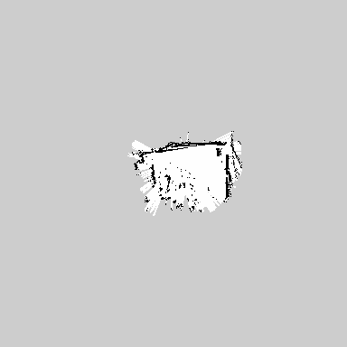
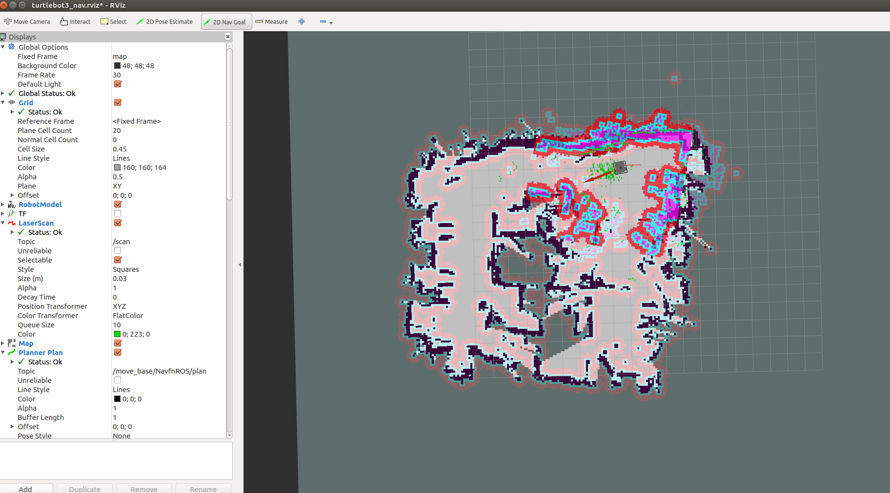

本章目标
使用课程指定 gmapping 建图，保存 map.yaml/map.pgm，再通过 AMCL 与 move_base 定位和导航。需有 TurtleBot3、Noetic 控制环境、新鲜 scan/odom/TF、安全场地、看车者和实体停车方式。现场条件不齐时只阅读，不发送导航目标。
依赖：课程 Noetic 套件及实验二同一份当天配置。现有 Jazzy ROS2 适配器不具备本课程完整 gmapping/AMCL/move_base action 链。
准备与检查
以下套件命令均在 Ubuntu 本地终端执行。先按实验二核对当天小车地址、桥接和配置；结束其他遥控、旧导航或 ROS2 适配进程。建图/导航过程中不切网络、不挂起虚拟机、不改时钟。
操作步骤：建图、保存和导航
检查离线软件
Ubuntu 本地终端 A运行
cd ~/robot_labs、bash lab.sh health。继续：出现
SOFTWARE_CHECK_PASS。此检查不连小车。核对当天网络与传感器
Ubuntu 本地终端 A运行
bash lab.sh net、bash lab.sh doctor、bash lab.sh check。继续：地址/路由正确，且
SENSOR_CHECK=PASS，scan/odom/TF 时间戳新鲜。失败就停并保存输出。确认控制权与场地
操作者 / 看车者清空可通行区域，指定一人看车并确认实体停车方式。确认没有实验二 teleop、旧导航或其他 /cmd_vel 发布者。
继续：现场空旷、控制权唯一、车辆静止。
启动 gmapping
Ubuntu 本地终端 A运行并保持：
cd ~/robot_labs bash lab.sh slam入口再次做传感器检查并创建本轮目录，启动 gmapping 和 ROS1 RViz。
继续：模型、激光和增长中的栅格地图出现。无地图或 TF 错误时不要开始移动。
启动低速遥控
Ubuntu 本地终端 B运行
cd ~/robot_labs、bash lab.sh teleop。窗口按住 W/S 前后、A/D 转向；松键停车，空格/Esc 锁停，Q 退出。继续：窗口显示等待/就绪且看车者在位；按键语义以该套件为准，不与另一套 teleop 混用。
缓慢扫描环境
键盘窗口 / 看车者从可识别的墙角/障碍附近开始，以低速短距移动并缓慢转向，让激光看到多方向轮廓。减少人员走动和快速原地旋转。
继续：地图随环境扩展且边界大体稳定。地图跳变、激光停更、时间戳异常或接近障碍时立即松键和停车。
停止遥控但保留 SLAM
Ubuntu 本地终端 B松键并确认实车静止，在 teleop 窗口按 Q 退出。终端 A 中 SLAM 必须继续运行。
继续：遥控窗口关闭、SLAM 终端仍活动、车已停稳。
保存地图两件套
Ubuntu 本地终端 B运行
cd ~/robot_labs、bash lab.sh save、bash lab.sh files。确认本轮目录下
map.yaml与map.pgm都存在；移动或备份时两者一起保留。继续：保存输出明确完成、两件套非空且属于本轮。一直等待时检查 SLAM 和 /map，不要先停 SLAM。

本组留存地图示例｜白色区域表示已判定空闲，深色线条表示障碍，灰色区域表示未知。仅用于说明地图文件的显示形式，不代替当前场地地图。 保存后停止 SLAM
Ubuntu 本地终端 A仅在保存成功后按 Ctrl+C 结束 SLAM。不要让 gmapping 与 AMCL 同时发布 map→odom。
继续：SLAM 正常退出，地图文件保留。
启动导航
Ubuntu 本地终端 A运行
cd ~/robot_labs、bash lab.sh nav。入口要求 SLAM、teleop、view 已关闭，并再次检查传感器和速度源。继续：加载本轮地图，RViz 出现 AMCL、代价地图和导航界面。缺图时核对 map.yaml 引用与 map.pgm。
设置当前初始位姿
导航 RViz根据小车当前实际位置点击
2D Pose Estimate，在对应地图位置按下并拖出真实朝向再松开。继续：激光轮廓与地图墙面基本重合，粒子云逐渐收敛。持续错位时先检查地图、位置、scan/TF，不要盲目发目标。

教师任务书示例｜观察栅格地图与机器人位姿。现场用自己这轮保存的地图。 发送一个近距离目标
导航 RViz / 看车者选择地图中已知通畅、离障碍有余量的位置，点击
2D Nav Goal并拖出终点朝向。发送后机器人可能立即运动，全程看车。继续：观察规划路径和实际运动直到结果明确。新目标会替换仍在执行的旧目标；比较目标时先等上一条结果。
读取并记录结果状态
Ubuntu 本地终端 / 记录者运行
bash lab.sh files定位本轮目标、结果和日志文件；记录 goal ID、状态码、原文、时间和实车表现。继续：成功需有本轮状态 3 / Goal reached 与实际观察相符；状态 2 是取消/替换，状态 4 是中止，分别记录。
取消未完成目标并停车
Ubuntu 本地终端 B / 看车者需要停止时运行
cd ~/robot_labs、bash lab.sh cancel，看车者确认实车停稳。网络异常时使用现场实体停车方式。继续：目标已取消且小车实际停稳。软件取消请求本身不是停车证据。
结束电脑端节点并备份
Ubuntu 本地终端确认导航结束后运行
bash lab.sh stop、bash lab.sh files。备份本轮 map 两件套、RViz 截图、目标/结果/日志和现场视频，不覆盖失败轮。收尾：车停稳、电脑端套件已停止、文件可回查。小车 master/驱动仍保留，按现场安排处理。
检查与留证
- 保存新鲜度检查、建图 RViz、map.yaml/map.pgm、初始定位、目标和结果文件及视频。
- 状态 3、被新目标替换和无有效控制中止应分开写；不得合并成一次成功。
- 每轮导航按 goal ID 分别记录状态码、原文和现场表现；状态不同的目标不可合并成一次结果。
- 地图环境缺少清楚稳定障碍参照是地图较乱的背景之一，不单独认定为导航中止根因。
常见问题
SENSOR_CHECK=FAIL但计数增加：查收包年龄、header 时间戳、时钟和 TF；失败时不移动。- RViz 有进程但窗口不见：查 Ubuntu 图形桌面/授权，不能推断传感器坏。
- map_saver 等待：保持 SLAM，确认 /map 有消息、终端连同一 master。
- 地图不能载入：YAML 与 PGM 同目录，核对 YAML 的 image 字段。
- 激光与地图错位：检查地图是否对应当前场地、初始位姿、时间和 TF。
Failed to find a valid control：取消停车并保存结果；检查定位、局部代价地图、障碍和目标位置，不要连续重发目标。- 一个目标没有 status 3：依该 goal ID 的结果判断取消、中止或丢失，不推定成功。
收尾
先取消剩余目标并目视确认停稳，再结束控制窗口和导航。保存整个轮次目录及原始日志；仅在无人共享时按现场安排结束小车端 bringup/master。
本章证据范围
命令来自课程 Noetic ~/robot_labs/lab.sh 与操作指南。旧版或其他套件的入口不要与本章所列命令混用。离线合成地图、软件测试、旧地图和本轮实体导航是不同证据。